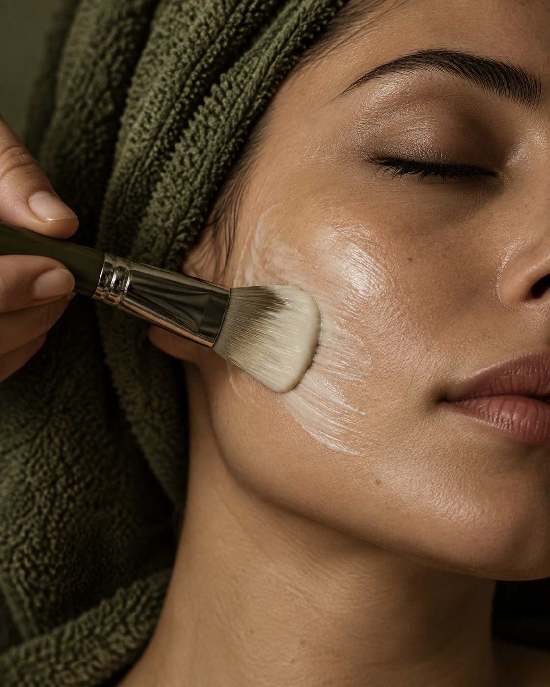

مقدماتی ۱01
لارام اسکین · با مدیریت مارال قاسمی
هنرِ مراقبت،
دانشِ پوست.
از یادگیری فیشال تا انتخاب مراقبت مناسب؛
مسیر شما در دنیای پوست، از اینجا شروع میشود.
آموزش پوست و فیشالخدمات حضوری در تهران

THE ART OF SKINCAREبا دقت، با آگاهی.
Lپوست را
بهتر بشناسیم.
بهتر بشناسیم.
LARAM ACADEMY / آکادمی
دورههای آموزش پوست و فیشال
دورههای لارام بهصورت آفلاین و حضوری برگزار میشوند.
مقدماتی ۲02
آموزش جامع03
دورههای تخصصی
دوره درمان زکابر تراپی
اطلاعات دوره و ثبتناماسکالپ اسکراب سر
اطلاعات دوره و ثبتنامدوره درمان لک
اطلاعات دوره و ثبتنامدوره درمان جوش
اطلاعات دوره و ثبتنامآموزش روتیننویسی
اطلاعات دوره و ثبتنامآموزش تمامی دستگاههای بهروز دنیا
اطلاعات دوره و ثبتنامسرفصلهای آموزش فیشال و مراقبت پوست
برای مشاهدهٔ مباحث، هر عنوان را باز کنید.
۱شناخت پوست
- انواع پوست: خشک، چرب، مختلط، نرمال
- شناخت مشکلات و نیازهای پوست
- تشخیص نوع و وضعیت پوست
- آشنایی با موانع پوستی و حساسیتها
- موارد منع انجام فیشال
۲آنالیز پوست
- نحوه صحیح مشاوره با مشتری
- بررسی نوع و شرایط پوست
- شناخت جوش، لک، دهیدراتگی، کدری و منافذ
- انتخاب پروتکل مناسب برای هر پوست
- طراحی روتین مراقبتی متناسب با پوست
۳اصول بهداشت و آمادهسازی
- ضدعفونی و استریل ابزار و محیط
- اصول بهداشت فردی و کار با مشتری
- آمادهسازی تخت و وسایل فیشال
- نحوه صحیح استفاده و نگهداری از ابزار
۴مراحل فیشال پایه
- پاکسازی اولیه
- شوینده و پاکسازی عمقی
- لایهبرداری
- بخور و آمادهسازی پوست
- تخلیه اصولی کومدونها در صورت مناسب بودن پوست
- ماساژ صورت و گردن
- ماسک
- تونر، سرم و آبرسان
- کرم و ضدآفتاب
- مراقبتهای بعد از فیشال
۵فیشال تخصصی
- فیشال پوست خشک و دهیدراته
- فیشال پوست چرب و مستعد جوش
- فیشال پوست مختلط
- فیشال پوست کدر و خسته
- فیشال پوست حساس
- فیشال ضدلک و روشنکننده
- فیشال آبرسان و ترمیمکننده
- فیشال ضدپیری
۶کار با دستگاهها
آموزش کار با دستگاهها متناسب با دستگاههای مورد استفاده در دوره انجام میشود.
- هیدروفیشال
- اولتراسونیک
- هایفرکانس
- اتوی صورت
- میکرودرم
- LED
- اکسیژنرسانی
۷مراقبتهای تکمیلی
- آموزش ماساژ صورت
- ماسکگذاری صحیح
- انتخاب محصولات مناسب هر پوست
- ترکیب صحیح محصولات و مواد فعال
- مراقبت قبل و بعد از فیشال
- توصیه روتین خانگی به مشتری
۸نکات حرفهای کار
- نحوه برخورد و مشاوره با مشتری
- تشکیل پرونده پوستی
- عکاسی قبل و بعد
- قیمتگذاری خدمات
- طراحی پکیجهای فیشال
- افزایش رضایت و وفاداری مشتری
برای انتخاب دوره و شیوهٔ برگزاری راهنمایی میخواهید؟گفتوگو دربارهٔ دورهها
THE PERSON BEHIND LARAM
مارال قاسمی
بنیانگذار آکادمی و مرکز
پوست و مو لارام اسکین
“پشت نام لارام،
پشت نام لارام،
یک چهره آشناست.
مارال قاسمی، چهره آموزش و خدمات لارام اسکین است. برای آشنایی نزدیکتر با شیوه کار و فضای مجموعه، آموزشها و فعالیتهای او را در صفحه لارام دنبال کنید.
آشنایی با مارال در اینستاگراممسیر یادگیری و فعالیت حرفهای
سوابق و گواهیها
نگاهی به دورهها و گواهیهای مارال قاسمی در حوزهٔ پوست، مو و زیبایی.

عضویت در برنامهٔ مستر علمی زکابر
زکابر · لاین تخصصی احیای مو

دورهٔ مراقبت از پوست
مدرسهٔ فا · دورهٔ ششماهه

دورهٔ چندلاین زیبایی
TITU · دورهٔ ۳۲ ساعته
LARAM CARE / خدمات حضوری
کمی زمان،
فقط برای پوست شما.
برای آشنایی با خدمات فیشال و پاکسازی، هزینهها و زمانهای مراجعه، پیش از رزرو با مجموعه گفتوگو کنید.
پرسوجو و هماهنگی نوبت۰۱
گفتوگو درباره نیاز شما
هدف مراقبت و پرسشهایتان را با مجموعه مطرح کنید.
۰۲
آشنایی با خدمت و هزینه
پیش از انتخاب، درباره مراحل و شرایط خدمت بپرسید.
۰۳
خدمات مراقبتی جایگزین تشخیص و درمان پزشک نیستند.هماهنگی زمان مراجعه
ساعت و نشانی دقیق را پیش از مراجعه تأیید کنید.
THE LARAM EDIT / فروشگاه
مراقبت، بعد از اینجا
ادامه دارد.
محصولات، متریال و ابزارهای موجود را در فروشگاه لارام ببینید.
پیش از خرید، مشخصات و موجودی روز را بررسی کنید.
LET’S TALK / ارتباط با لارام
قدم بعدی را با هم انتخاب کنیم.
برای آموزش، خدمات یا پرسش درباره محصولات با ما در ارتباط باشید.
تهران، اشرفی اصفهانی، خیابان اسکندرزاده، نگین رضا
لطفاً نشانی دقیق و زمان حضور را پیش از مراجعه تأیید کنید.